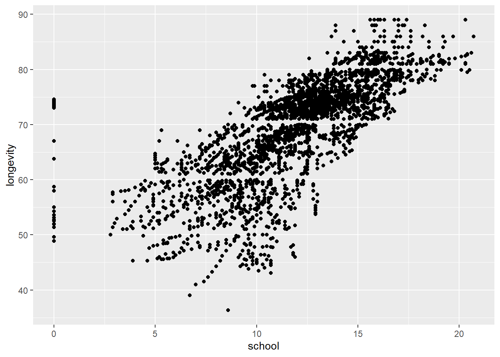
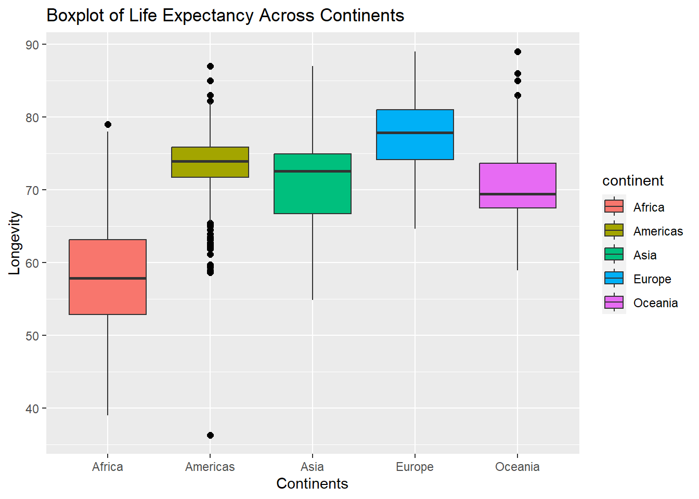
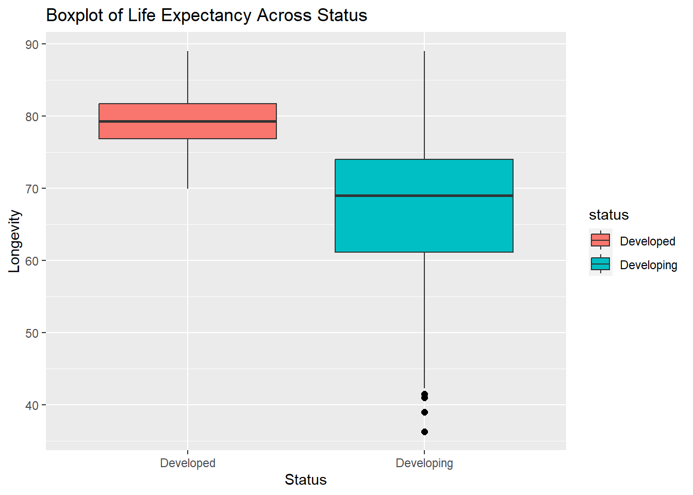

#| label: setup
#| include: false
knitr::opts_chunk$set(echo = TRUE)Project Part 2
STAT 511
Project Part 2
#| message: false
# Libraries we used
library(openintro)Loading required package: airportsLoading required package: cherryblossomLoading required package: usdatalibrary(tidyverse)── Attaching packages
───────────────────────────────────────
tidyverse 1.3.2 ──✔ ggplot2 3.4.0 ✔ purrr 1.0.0
✔ tibble 3.1.8 ✔ dplyr 1.0.10
✔ tidyr 1.2.1 ✔ stringr 1.4.1
✔ readr 2.1.3 ✔ forcats 0.5.2
── Conflicts ────────────────────────────────────────── tidyverse_conflicts() ──
✖ dplyr::filter() masks stats::filter()
✖ dplyr::lag() masks stats::lag()library(broom)
library(pastecs)
Attaching package: 'pastecs'
The following objects are masked from 'package:dplyr':
first, last
The following object is masked from 'package:tidyr':
extractlibrary(countrycode)
library(corrplot)corrplot 0.92 loadedPart A
Specify the research question you want to investigate using this data.
- Do demographics affect life expectancy?
Part B
1. Document any initial data cleaning steps you take – e.g. changing variable names, converting characters to factors, etc.
# Information regarding data from:
# https://www.kaggle.com/datasets/kumarajarshi/life-expectancy-who?resource=download
# load data (must have file in correct project folder)
life_exp <- read.csv("./data/Life Expectancy Data.csv")
# life_exp
# add continent to dataset
# https://stackoverflow.com/questions/47510141/get-continent-name-from-country-name-in-r
life_exp$continent <- countrycode(sourcevar = life_exp[,"Country"],
origin = "country.name",
destination = "continent")
# Change Variable names for ease of use - including changing to lowercase
life_exp <- life_exp %>%
rename(
country = Country,
year = Year,
status = Status,
longevity = Life.expectancy,
adult_mort = Adult.Mortality, # number of deaths aged 15 - 60 per 1000 people
inf_death = infant.deaths, # number of infant deaths per 1000 people
alcohol = Alcohol, # Liters of pure alcohol consumed per capita (15 YO +)
perc_exp = percentage.expenditure, # % Expenditure on health as percentage of GDP per Capita
hep_b = Hepatitis.B, # % of 1 YO immunized against Hep B
measles = Measles, # Number of reported cases per 1000 people
bmi = BMI, # Average BMI for population
u5_deaths = under.five.deaths, # number of under 5 deaths per 1000
polio = Polio, # % of 1 YO immunized against polio
tot_exp = Total.expenditure, # % general gov expenditure on health vs total gov expenditure
dipth = Diphtheria, # % 1 YO vaccinated TDaP
aids = HIV.AIDS, # deaths per 1000 live births HIV/AIDS (0-4 years)
gdp = GDP, # GDP per captia in USD
pop = Population,
thin_10_19 = thinness..1.19.years, # % prevalence of thinness among 10 - 19 YO
thin_5_9 = thinness.5.9.years, # % prevalence of thinness among 5 - 9 YO
inc_comp = Income.composition.of.resources, # Human Development Index - income composition of resources
school = Schooling # number of years of schooling
)
# change character columns to factors
life_exp <- as.data.frame(unclass(life_exp), stringsAsFactors = TRUE)
# check classes to see if the changes held
sapply(life_exp, class) country year status longevity adult_mort inf_death alcohol
"factor" "integer" "factor" "numeric" "integer" "integer" "numeric"
perc_exp hep_b measles bmi u5_deaths polio tot_exp
"numeric" "integer" "integer" "numeric" "integer" "integer" "numeric"
dipth aids gdp pop thin_10_19 thin_5_9 inc_comp
"integer" "numeric" "numeric" "numeric" "numeric" "numeric" "numeric"
school continent
"numeric" "factor" # set the response variable to the Life.expectancy column as y
# this may not be necessary, but was done preemptively for the linear model
y <- life_exp$longevity
# remove the response variable from the dataframe and assign to x
# this may not be necessary, but was done preemptively for the linear model
x <- life_exp[,-4]2. Filter the data to remove any rows that have a missing value for your main response variable. Make note of how many observations this removes.
# check summary to determine if there are nulls
summary(y) Min. 1st Qu. Median Mean 3rd Qu. Max. NA's
36.30 63.10 72.10 69.22 75.70 89.00 10 There are 10 null values in the label
# remove the null values and assign the new dataframe with removed nulls to new variable
life_exp1 <- life_exp[complete.cases(life_exp$longevity),]
# check for nulls in the summary
summary(life_exp1$longevity) Min. 1st Qu. Median Mean 3rd Qu. Max.
36.30 63.10 72.10 69.22 75.70 89.00 Removing the null values from the response variable resulted in the removal of 10 rows
3. Narrow down your dataset to a pool of 10 – 20 potential predictor variables. You should document your decisions and justifications. Some things to consider:
a. Which variables are of substantive interest to your research question?
head(
life_exp %>%
group_by(year) %>%
count(year) %>%
arrange(desc(n)))# A tibble: 6 × 2
# Groups: year [6]
year n
<int> <int>
1 2013 193
2 2000 183
3 2001 183
4 2002 183
5 2003 183
6 2004 183The year 2013, life expectancy, adult mortality, BMI, Alcohol, Hepatitis B, Schooling, Polio, Diphtheria, and Measles. The year 2013 was chosen, since thats where the highest count of rows is. Alcohol, Hepatitis B, Diphtheria, Measles, Polio were chosen because they are factors that influence health and affect life expectancy. Life expectancy and Adult Mortality help give a big picture of most common ages that both genders are passing away.
b. Which ones aren’t of substantive interest, and why? For example, there may be some administrative variables (e.g. phone number or website) or others deemed irrelevant to the research question.
# histogram of infant deaths
hist(life_exp$inf_death,
main = "Histogram of Infant Deaths",
xlab = "Infant Deaths")
# histogram of deaths under 5
hist(life_exp$u5_deaths,
main = "Histogram of Under 5 Deaths",
xlab = "Amount of deaths under 5")
# histogram of thinness
hist(life_exp$thin_10_19,
main = "Histogram of Thinness from age 10 to 19",
xlab = "Percentage of Thinness")
# histogram of thinness
hist(life_exp$thin_5_9,
main = "Histogram of Thinness from age 5 to 9",
xlab = "Percentage of Thinness")
There were multiple variables that could have been used to help us answer our research question, but there was not much variation in the data or it was not relevant enough. Some of the variables that could not be of use due to the data provided included infant deaths and under 5 deaths due to their values falling under a single range. For example, in under 5 deaths, the data ranged from 0-2500 and the values were only between 0-250. The thinness variables were ones that didnt seem relevant enough to include because they looked vague.
c. Are there variables that are unusable due to large amounts of missingness?
# show counts of missingness
# first get total row count
count_rows <- nrow(life_exp)
# Then get sum of NAs
sum_na_gdp <- sum(is.na(life_exp$gdp))
# Then divide by rows to get percentage
per_na_gdp <- (sum_na_gdp / count_rows) * 100
# repeat steps for population and hep b
sum_na_pop <- sum(is.na(life_exp$pop))
per_na_pop <- (sum_na_pop / count_rows) * 100
sum_na_hepb <- sum(is.na(life_exp$hep_b))
per_na_hepb <- (sum_na_hepb / count_rows) * 100The variables population (missing 652 rows, which is 22.19% missing), hepatitis B(missing 553 rows, which is 18.82% missing), and gdp (missing 448 rows, which is 15.25% missing) were the most unstable variables due to them having at least 15% of their data missing.
d. Are there multiple variables that measure very similar things or should be combined into one variable (e.g. a column for both hours and minutes)? Inspecting a correlation matrix of the data is useful here
# plot correlation between columns
cor.life_exp <- cor(life_exp[sapply(life_exp1, is.numeric)])
corrplot(cor.life_exp)
Based on the correlation plot (in place of a heatmap) there are some variables that are correlated. We observed some columns that do measure similar things or can be combined. Measles is closely related to infant deaths and deaths under 5 years. Also, infant deaths and deaths under 5 years seem related since they had the highest corrleation.
4. Inspect your missing data again and try to gain understanding about what is missing and why.
a. Read the dataset’s documentation/codebook for insight.
From the variables we chose to include, hepatitis B, population, and gdp were missing in larger percentages. According to the documentation, lesser known countries provided less data regarding the 3 aformentioned variables.
b. Check if there are other values stored as -99 or NA that may indicate missingness.
# check if there are -99s
# NA means there are no -99 values
any(life_exp$longevity == -99)[1] NAThere are no -99 values in the label
# check if there are any 'NA's in the columns
# we used regex to check if there are any characters at all in the column
# NA means there are no characters in the column
sum(str_detect(life_exp$longevity, '[a-zA-Z]')) > 0[1] NAThere are no character values in the column, which means there are no ‘NA’ values or combinations of lowercase and uppercase characters that could be portrayed as ‘NA’ in the column
c. Provide a brief summary of the missingness
There are no ‘NAs’ or ‘99s’ in our data, but there are blank spaces where there should be values.
5. Document what you decide to do about the missingness, and provide the code for filtering out any observations, if applicable.
We will leave the blank spaces alone. We won’t take out any rows or columns because of the information attached to them. If time (and skill) allows, we will either use MICE or KNN to impute values
6. Document any other data cleaning steps you take, if applicable
Instead of using countries, we will use continents. The code for the inclusion of continents has been provided in lines 55-57. The country column has not been dropped and will be kept as reference
7. Save your cleaned dataset as a .csv or .RDS (use the function write_csv() or write_rds()). Make sure to name it differently from your original dataset (e.g. data_cleaned or data_for_analysis) and save it in your data folder.
# save dataframe of data from 2013
life_exp_2013 <- life_exp1[life_exp1$year==2013, ]
dim(life_exp_2013)[1] 183 23# assign filepaths to variables
filepath_1 <- "./data/Life Expectancy Data Cleaned Version.csv"
filepath_2013 <- "./data/Life Expectancy Data Cleaned Version 2013.csv"
# save to csv
write_csv(life_exp1, filepath_1)
write_csv(life_exp_2013, filepath_2013)Part C
1. First, provide a histogram of your response variable by itself
We continued using the cleaned unfiltered model
# plotting histogram of life expectancy
ggplot(life_exp1, aes(x = longevity)) +
geom_histogram(binwidth = 5) +
labs(title = "Histogram of Life Expectancy") +
ylab("Count of Ages") +
xlab("Longevity")
2. For each continuous predictor
a. Create a scatterplot (response on y axis, predictor on x axis)
b. Comment on the relationship – does it appear to be linear? Strong/weak? Positive/negative?
c. Are there outliers?
# Plotting Alcohol vs Life Expectancy
ggplot(data = life_exp, aes(x = alcohol, y = longevity)) +
geom_point() +
labs(title = "Plot of Alcohol vs Life Expectancy") +
ylab("Longevity") +
xlab("Alcohol")Warning: Removed 203 rows containing missing values (`geom_point()`).
It doesn’t seem to have any linear relationship, the regression line is probably somewhere near 0. If alcohol and life expectancy are independent, then I believe there are no outliers.
# Plotting Percentage Expenditure vs Life Expectancy
ggplot(data = life_exp, aes(x = perc_exp, y = longevity)) +
geom_point() +
labs(title = "Plot of Alcohol vs Life Expectancy") +
ylab("Longevity") +
xlab("Alcohol")Warning: Removed 10 rows containing missing values (`geom_point()`).
It looks like there is some relationship between percentage expenditure and life expectancy but it’s curved instead of linear without outliers.
# Plotting BMI vs Life Expectancy
ggplot(data = life_exp, aes(x = bmi, y = longevity)) +
geom_point() +
labs(title = "Plot of BMI vs Life Expectancy") +
ylab("Longevity") +
xlab("BMI")Warning: Removed 42 rows containing missing values (`geom_point()`).
BMI and life expectancy has somewhat of a linear relationship and it’s positive. There’s one obvious outlier.
# Plotting Total expenditure vs Life Expectancy
ggplot(data = life_exp, aes(x = tot_exp, y = longevity)) +
geom_point() +
labs(title = "Plot of Total expenditure vs Life Expectancy") +
ylab("Longevity") +
xlab("Total expenditure")Warning: Removed 236 rows containing missing values (`geom_point()`).
There’s no clear linear relationship between total expenditure and life expectancy.
# Plotting HIV.Aids vs Life Expectancy
ggplot(data = life_exp, aes(x = aids, y = longevity)) +
geom_point() +
labs(title = "Plot of HIV.Aids vs Life Expectancy") +
ylab("Longevity") +
xlab("HIV.Aids")Warning: Removed 10 rows containing missing values (`geom_point()`).
The relationship between HIV.AIDS and life expectancy is curve as well. No obvious outlier is found.
# Plotting GDP vs Life Expectancy
ggplot(data = life_exp, aes(x = gdp,y = longevity)) +
geom_point() +
labs(title = "Plot of GDP vs Life Expectancy") +
ylab("Longevity") +
xlab("GDP")Warning: Removed 453 rows containing missing values (`geom_point()`).
The relationship between GDP and life expectancy is curve as well. But there are some outliers.
# Plotting Thenniess vs Life Expectancy
ggplot(data = life_exp, aes(x = thin_5_9, y = longevity)) +
geom_point() +
labs(title = "Plot of Thinness vs Life Expectancy") +
ylab("Longevity") +
xlab("Thinness")Warning: Removed 42 rows containing missing values (`geom_point()`).
It seems that thinness5.9.years and life expectancy has some relationship but not clear. Seems like it could be funneling.
# Plotting Income.composition.of.resources vs Life Expectancy
ggplot(data = life_exp, aes(x = inc_comp, y = longevity)) +
geom_point() +
labs(title = "Plot of Income_comp vs Life Expectancy") +
ylab("Longevity") +
xlab("Income_comp")Warning: Removed 170 rows containing missing values (`geom_point()`).
There is positive linear relationship between income.composition.of.resources and life expectancy. There is a line of outliers with x value of 0.
# Plotting Schooling vs Life Expectancy
ggplot(data = life_exp, aes(x = school, y = longevity)) +
geom_point() +
labs(title = "Plot of Schooling vs Life Expectancy") +
ylab("Longevity") +
xlab("Schooling")Warning: Removed 170 rows containing missing values (`geom_point()`).
There is positive linear relationship between Schooling and life expectancy as well. There is a line of outliers with x value of 0.
3. For each categorical predictor
There are two categorical predictor. Country and Status. 2938 observations in each predictor.
# plot boxplot of life expectancy across continents
ggplot(life_exp,
aes(x = continent,
y = longevity,
fill = continent)) +
geom_boxplot(outlier.color = "black",
outlier.shape = 16,
outlier.size = 2,
notch = FALSE) +
labs(title = "Boxplot of Life Expectancy Across Continents") +
ylab("Longevity") +
xlab("Continents")Warning: Removed 10 rows containing non-finite values (`stat_boxplot()`).
There appear to be differences in longevity based on continents, and there are some outliers.
# plot boxplot of life expectancy across country status
ggplot(life_exp,
aes(x = status,
y = longevity,
fill = status)) +
geom_boxplot(outlier.color = "black",
outlier.shape = 16,
outlier.size = 2,
notch = FALSE) +
labs(title = "Boxplot of Life Expectancy Across Status") +
ylab("Longevity") +
xlab("Status")Warning: Removed 10 rows containing non-finite values (`stat_boxplot()`).
There appear to be differences in Life Expectancy based on the country’s status, and there are some outliers in developing countries.